Unified Drive System
AmphiBot features a revolutionary unified drive system with propellers embedded into the wheels. The outer perimeter acts as a wheel on land, while internal blades function as a propeller in water.
AmphiBot is an innovative amphibious trash collection robot capable of operating seamlessly on both land and water surfaces. Featuring a unified drive system with a unique wheel design that functions effectively across both environments, eliminating the need for separate propulsion systems.
Developed at the Department of Robotics and Mechatronics Engineering, University of Dhaka, AmphiBot addresses environmental pollution while contributing novel research to amphibious robotics.
AmphiBot features a revolutionary unified drive system with propellers embedded into the wheels. The outer perimeter acts as a wheel on land, while internal blades function as a propeller in water.
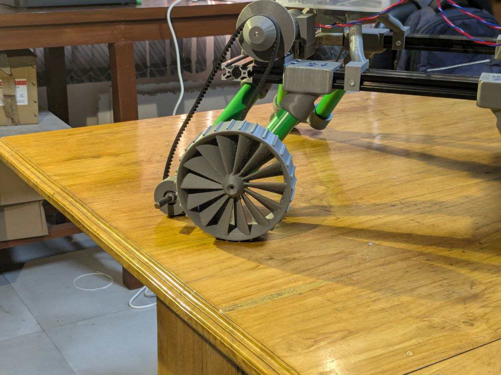
The wheel design uses NACA0012 airfoil for optimal hydrodynamic performance, validated through CFD simulations in Siemens STAR-CCM+ before 3D printing.
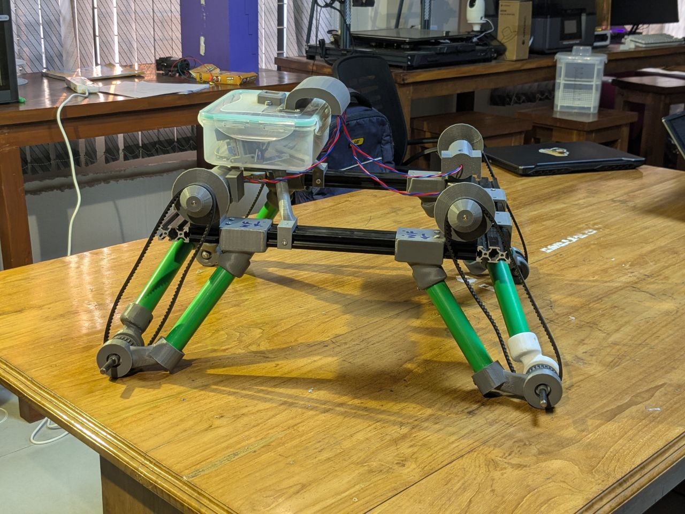
Built with 2040 aluminum profiles and 3D-printed PLA+ components, featuring modular assembly using M4 screws and T-nuts—no glue or welding required.
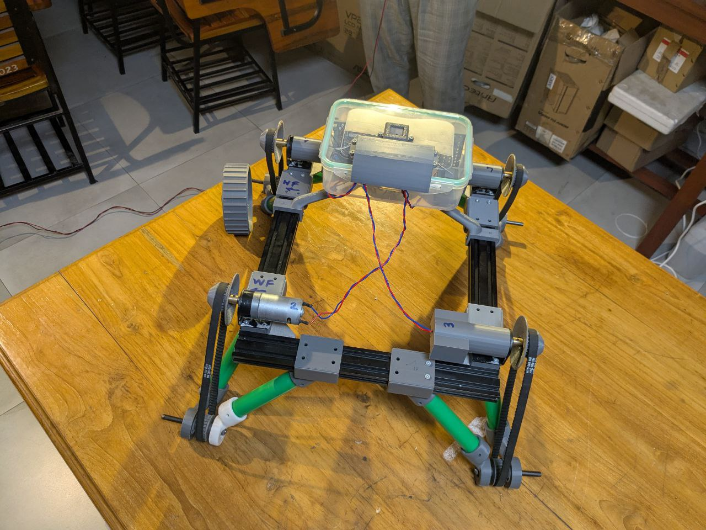
All electronics are protected with silicon sealant and waterproof enclosures, ensuring reliable operation in aquatic environments.
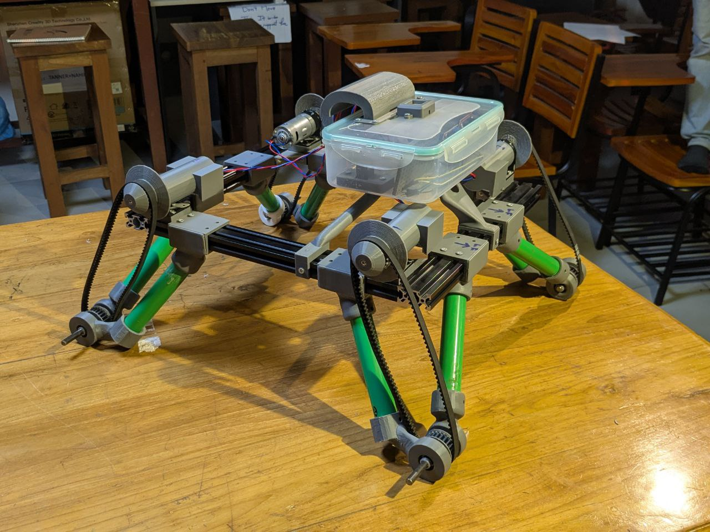
Equipped with NEO-M8N GPS, MPU-6050 accelerometer-gyroscope, GY271 compass, and ultrasonic sensors for autonomous navigation and obstacle avoidance.
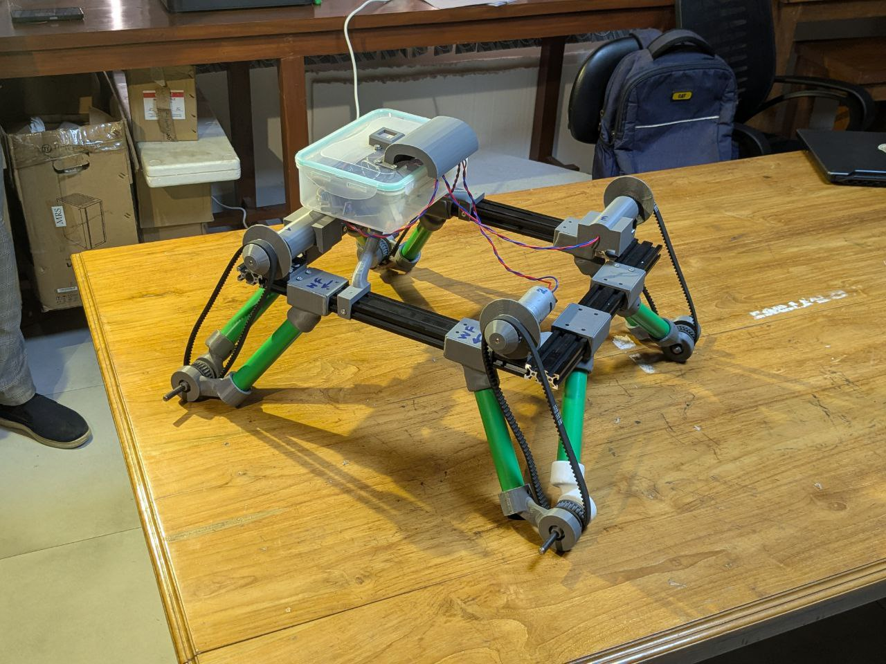
Features a 12V 165W monocrystalline solar panel and LiPo battery for extended autonomous operation in remote areas.
AmphiBot is an innovative solution to water surface cleanup, developed as a research project at the University of Dhaka's Department of Robotics and Mechatronics Engineering.
The project addresses the critical environmental challenge of waste accumulation in aquatic and terrestrial transition zones. With over 5.25 trillion pieces of plastic currently in the world's oceans, there is an urgent need for effective cleanup solutions.
What sets AmphiBot apart is its unified drive system—a unique wheel design that eliminates the need for separate propulsion systems for land and water. This innovation reduces mechanical complexity, lowers costs, and minimizes maintenance requirements compared to traditional multi-system amphibious robots.
The project is approximately 70% complete as of January 2026, with plans to release the design as open-source, allowing others to download, print, and build their own AmphiBot.
Novel Unified Drive System: Very little study exists on amphibious robots, with most based only on simulations. AmphiBot contributes a physical prototype demonstrating the effectiveness of a unified drive system.
Team:
Supervised by: Md Ariful Islam
Each critical subsystem was carefully designed and integrated to ensure optimal performance in both terrestrial and aquatic environments.
The core innovation features NACA0012 airfoil blades optimized through CFD simulations. The outer perimeter functions as a wheel on land, while internal blades propel the robot in water. Powered by 37GB gearbox with 555 series motors and GT3-560mm belt transmission.
Constructed with 2040 aluminum profiles for the core frame, 3D-printed SUNLU PLA+ custom parts, and PVC pipes for secondary structures. Fully modular assembly using M4 screws, nuts, and T-nuts allows easy maintenance and expansion.
Arduino Mega (Atmega 2560) microcontroller with Raspberry Pi 4 Model B+ for advanced processing. Features GPS (NEO-M8N), 6DOF IMU (MPU-6050), compass (GY271), ultrasonic sensors, and tilt sensors. Communication via Zigbee/Bluetooth, USB modem, and LoRa failsafe.
LiPo battery with IMAX B6-AC charger provides primary power, supplemented by a 12V 165W monocrystalline solar panel for extended autonomous operation. Two L298N motor drivers manage the drive system.
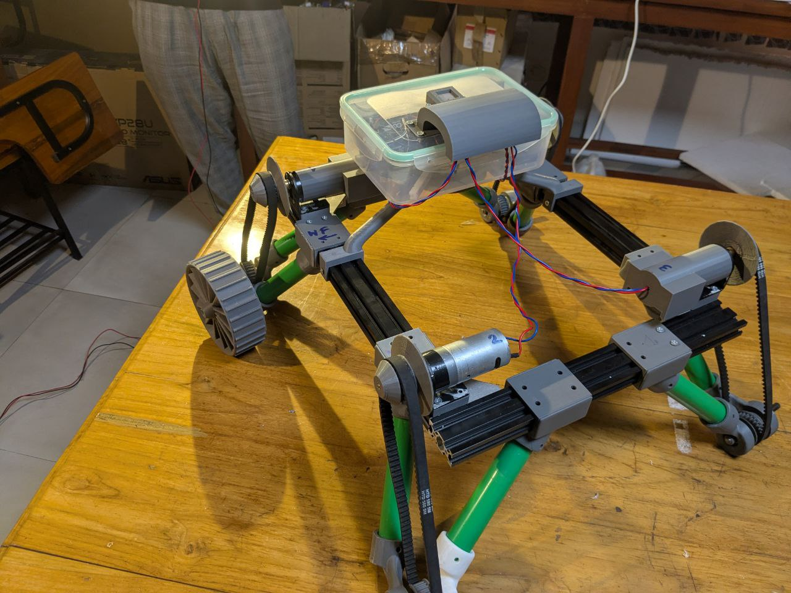
Comprehensive waterproofing using silicon sealant and waterproof enclosures for all electronics, ensuring safe operation in both shallow and deep water environments while protecting sensitive components.
Visual highlights from the development and testing of AmphiBot.
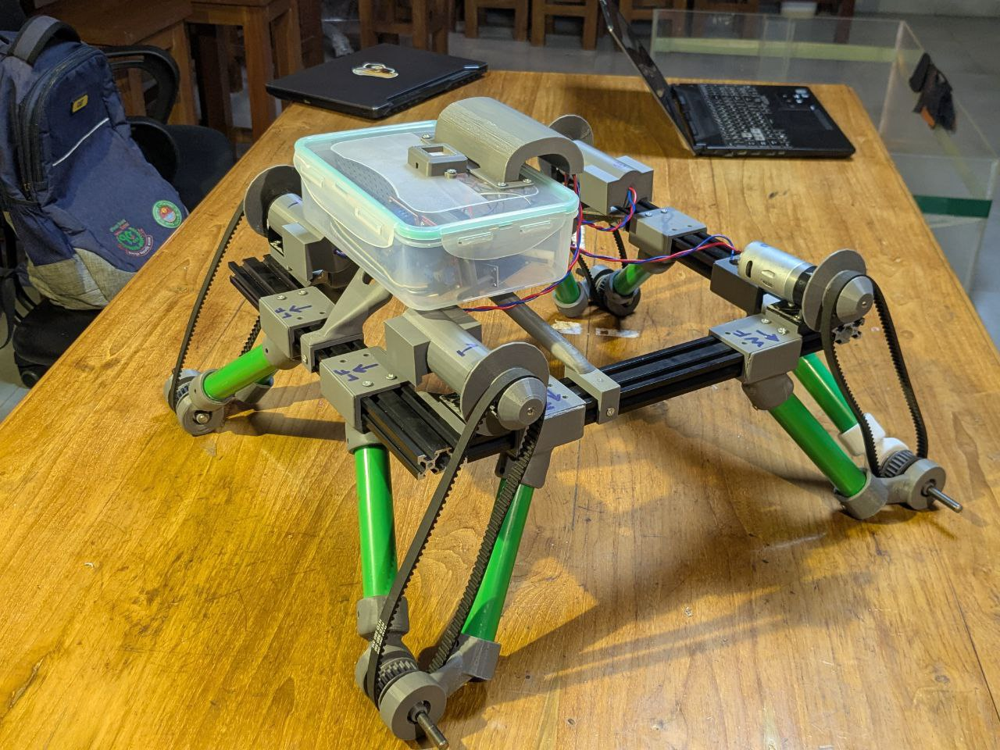
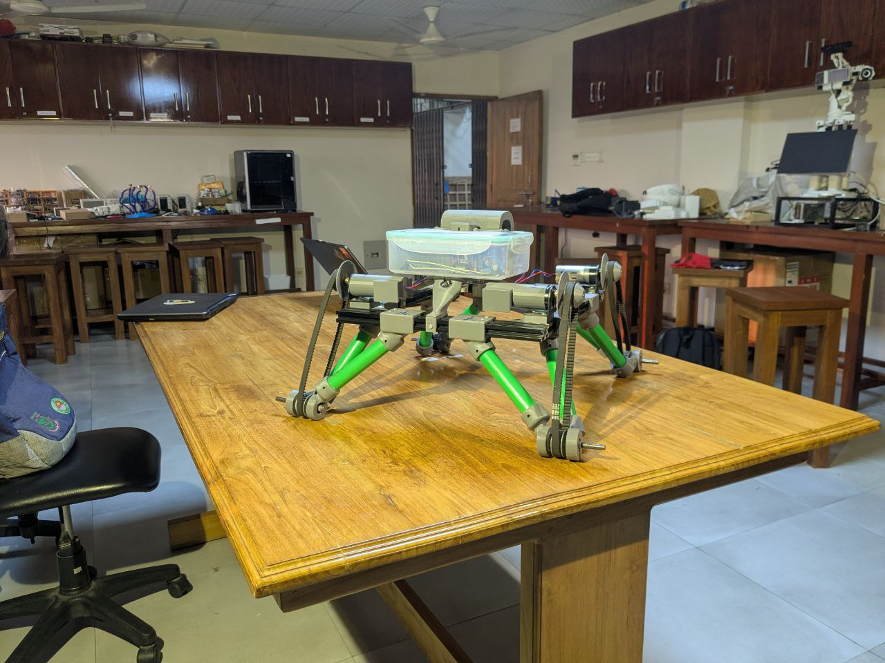
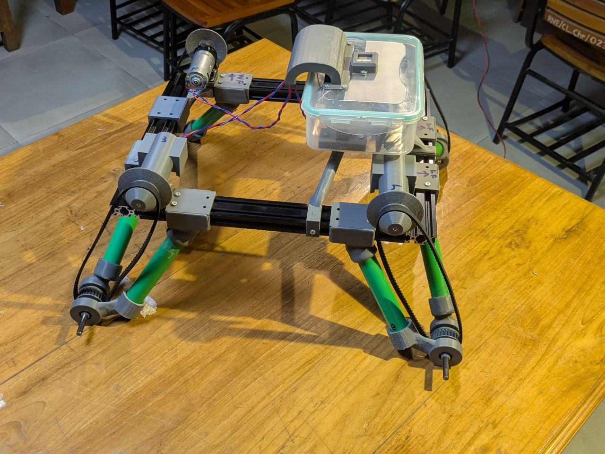
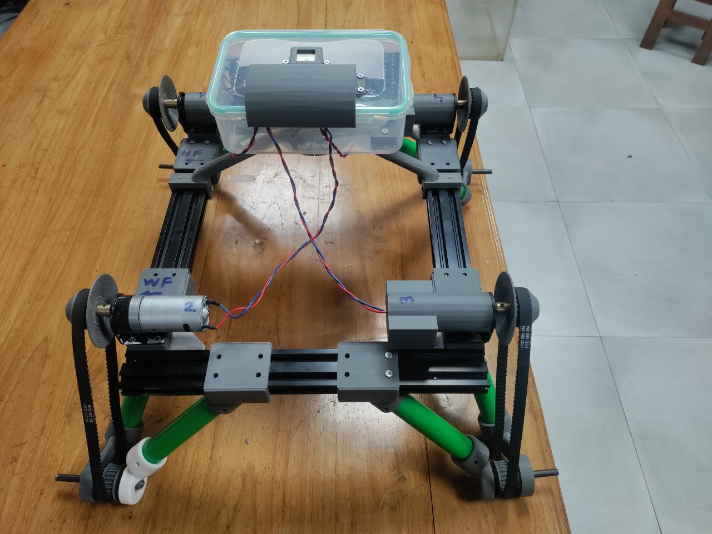
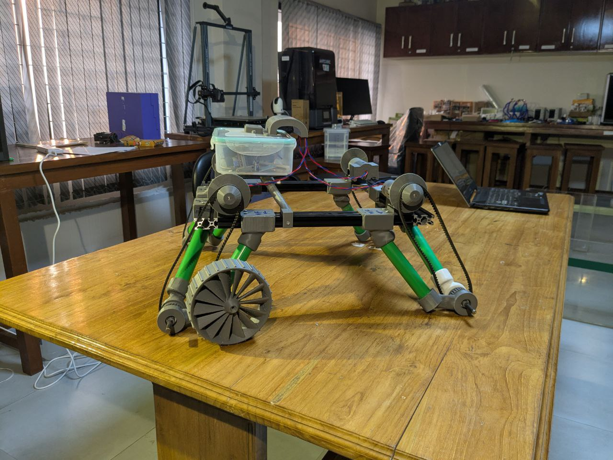